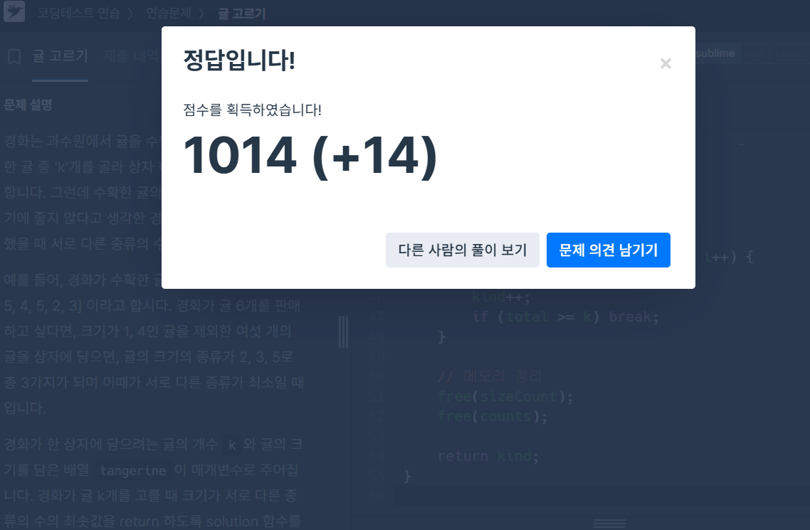

📖문제 풀이&공부 일지📖
프로그래머스 문제 풀이, 실습, 과제 연습 등 공부한 내용을 날짜별로 기록한 페이지입니다.
🗓️ 2025년 6월 12일
공부 주제: 자바스크립트 event 개념
자바스크립트의 이벤트(event)는 웹 브라우저가 HTML 요소에서 발생한 특정 사건을 감지하고, 그에 따라 정의된 동작을 실행하는 메커니즘이다. 이로 인해 웹 페이지는 사용자와의 상호작용이 가능해지며, 자바스크립트는 이벤트 기반(event-driven) 프로그래밍 언어로 작동하게 된다.
이벤트는 다양한 종류의 이벤트 타입(event type)을 갖는다.
대표적으로 click, scroll,
keydown, submit 등이 있으며, 각
이벤트는 발생한 사건의 성격을 나타내는 문자열로 구분된다.
예를 들어 HTML에서 다음과 같이
<p onclick="changeText(this)"> 형태로
이벤트를 설정할 수 있고, 사용자가 클릭했을 때 해당 함수가
실행된다. 이러한 방식으로 HTML 요소와 자바스크립트 함수가
연결된다.
내가 만든 포트폴리오 웹페이지에서는
DOMContentLoaded 이벤트를 사용해 텍스트 타자
효과를 실행하고, scroll 이벤트를 통해 배경색
전환을 적용하고 있다. 또한 IntersectionObserver를
활용해 특정 요소가 화면에 들어올 때 페이드인 애니메이션이
실행되도록 구성되어 있다.
🗓️ 2025년 6월 13일
공부 주제: 자바스크립트 귤 상자 문제 풀이
귤 상자 문제는 주어진 귤 목록에서 k개를 골라 담을 때, 서로 다른 크기의 종류 수를 최소화하는 문제이다. 핵심은 귤을 크기별로 분류한 후, **가장 개수가 많은 종류부터 선택해서 k개를 채우는 전략**을 사용해야 한다는 점이다.
이 문제는 해시맵과 정렬, 누적 카운팅이 결합된 문제로, 다음과
같은 흐름으로 해결했다:
1. 귤 크기별로 개수를 센다 (해시맵 사용)
2. 개수가
많은 순서대로 정렬한다
3. 개수를 누적하면서 k개가 되는
순간까지 종류 수를 센다
이때 크기별 개수 저장을 위해 구조체 배열과 qsort 정렬을 사용했고, 실제 구현은 C 언어에서 해시 대신 배열을 활용하여 최적화했다.
배운 점: 단순 정렬이 아니라, 빈도 기반 우선 선택 → 누적 방식을 써야 최소 종류 수를 구할 수 있다. 자료구조 선택, 효율성 고려, 그리디 사고의 결합이 중요한 문제였다.
🗓️ YYYY년 MM월 DD일
공부 주제: (예정)
아직 입력되지 않은 공부 기록입니다.
배운 점: -